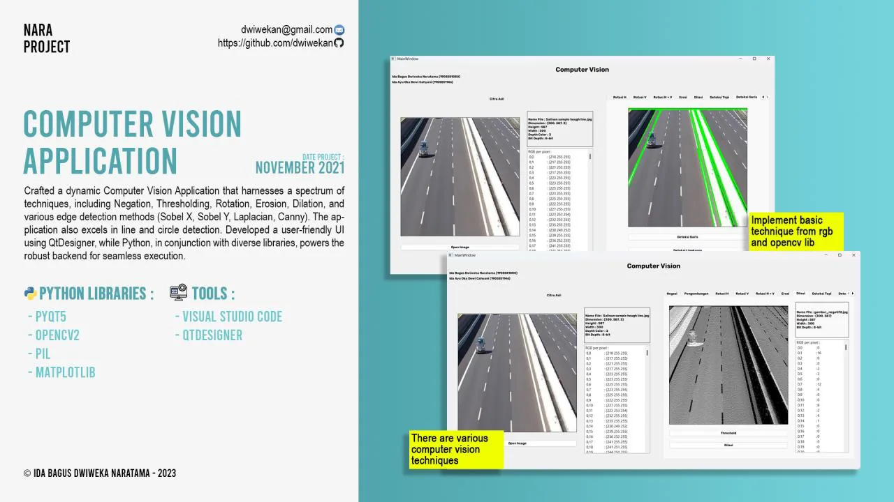

Course project, Udayana University
Computer Vision Toolkit
Desktop image-processing app for thresholding, morphology, Sobel, Laplacian and Canny edge detection, plus line and circle detection.
- Role
- Developer
- When
- Nov 2021
- Where
- Course project, Udayana University
Overview
A desktop computer vision application covering negation, thresholding, rotation, erosion and dilation, edge detection (Sobel X, Sobel Y, Laplacian, Canny), and line and circle detection. The interface was built with Qt Designer, with a Python back end using OpenCV.
